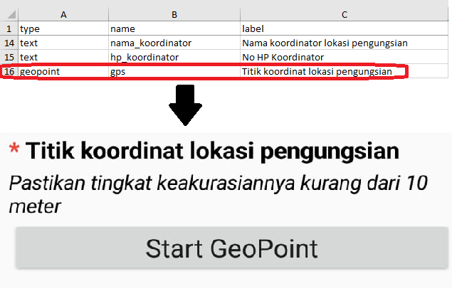

2.6 Creating XLS Form for ODK COllect
Course Objectives
In field survey activities sometimes you need a survey form to collect the data. Imagine if you need a form survey with dozens of questions for each respondent, you will certainly experience difficulties when filling data and also when entering data into a laptop. In this material you will learn how to create a survey form in digital format which will later be entered into your mobile phone. By the end of this, you will be able to:
- Explain the concept of XLSForm
- Operate the creation of an XLSForm for ODK Collect
Learning Activities
Understanding the concept of XLSForm
XLSForm is a standard form created to help speed up the process of creating survey forms in Excel. The creation of this survey form is done in an easy-to-read format and uses a familiar tool - Excel / Google Sheets. XLSForm produces standard standards for sharing and cooperating in making survey forms. XLSForm is very easy to use but can also be very complicated if you are familiar with making it.

XLSForm will then be converted to XForm, an open standard format, where the format allows you to create a form with very complex functions, such as multilevel questions, into a format that has been recognized by both data collection tools or in the form of sites on the internet, as well as in mobile devices.

| Tips: |
|---|
| The main requirement in making XLSForm is the final survey form must in this type of Microsoft Excel format (.xls or .xls). If you create survey forms using other applications such as Google Sheets or Libre Office, you must ensure that the final file is saved in format .xls or .xlsx. |
Making XLSForm for ODK Collect applications
You may be wondering how to create an effective XLSForm for your survey form. Now we will learn how to create it by understanding the basic format, basic questions, and additional format/questions type.
Standard Format
In making survey forms, there are some conditions that you must follow so the survey forms that we make can be changed into format XForm. Some rules that must be followed to create an appropriate survey form are:
- Having three main worksheets (survey, choices & settings)
- Having three main columns in each worksheet
- All entries must be starting from the first box
1. Three main worksheets /sheets
In the spreadsheet we create, it must consist of 3 main worksheets, the named worksheet survey, choices, and settings. The naming of this worksheet must match and must not be mistaken because it will fail when uploading your survey form.
| Tips: | |
|---|---|
| survey | All questions we make must be put on this worksheet. All questions that we make do not need to be included with the list of answers. All the list of answers we need will refer to the next worksheet |
| choices | On this worksheet we include all of our answer lists for each question that requires answer choices |
| settings | On this worksheet we can only enter the name of our form if the name of our form is different from the name of our file. For example, if our file name is form_survei_air_bersih.xls then in this worksheet we can name our form with the name we want, for example the Water Condition Form |
2. Three main column name
There are at least three main column that needs to be written in each worksheet
-
Worksheet survey
In survey worksheet we have to insert three columns name: type, name, and label. Column with name **type **indicates the type of question that will appear later, whether the question is in the form of choices, free entries or capture locations.
Column with name indicates the unique variable for each question list. These variables cannot be the same, do not use spaces, and are only numbers, letters or underscores.
Column label shows the question that will appear on the user’s mobile device. There is no standard format for this column, you are free to use letters, numbers, and special characters in this column.

-
Worksheet choices
At the choices worksheet we have to insert three columns namely name, list_name, & label. In list_name you create a group that contains a set of answer choices. For example like a set of answer choices that will appear under multiple choice questions.
Column name - All must be in unique variables that are not the same as the others both on the survey worksheet or choices; do not use spaces but are replaced by underscores; and do not use special characters such as question marks, exclamation marks, etc.
Column label - This column contains the answer text that will appear on the user’s cellphone. You can freely use spaces, special characters or letters in this column.
| Tips: |
|---|
| For naming variable in list_name this must follow the naming provided in survey worksheet. For example on survey worksheet we enter a multiple choice type with the name select_one jns_bencana. So on the choices worksheet we must fill list_name with name jns_bencana. |
-
Worksheet settings
Worksheet settings used when you want to make additional settings such as giving the name of your survey form, giving form a specific id, and version of your survey form. In order to use this feature, you must provide these three column names: form_title, form_id, & version.
Column form_title, you can provide free naming for your form. This naming will later appear on the user’s cellphone.
Column form_id, you can provide your form id. The terms for naming this column are that you can’t have the same id as the other forms, don’t use spaces, and don’t use special characters.
Column version, you can provide a version of your form. Adding column version is not mandatory. If you frequently add / change your survey forms, by providing column version, it will be easier for you to upload the forms on the server.

3. All entries must be starting from the first box
One of the most important requirements is that when we make a survey form, everything must start in the field /quadrant A-1.

All entries form must start in those quadrant/field because the system will convert spreadsheet file to XForm, so if you do not start from that position, and error will occur in the system.
In addition, the other main requirement is that you cannot use table formats such as merge, center, hide row / coloum, wrap text,etc. Everything must be in a standard format. Settings that we can use are to add letters in bold, give color to columns or rows, and change the shape and size of letters.
Basic Question Format for XLSForm
In the paper survey form, we usually find several questions such as short answers, long answers, entering the date of birth, and multiple choices. The more you are good at creating XLSForm, you might ask if there are other types of questions that can make your survey forms easier to use and retrieve data according to your wishes. To see all types of questions that can be used in making XLSForm, you can go to the site http://xlsform.org.
1. text
This type will generate a type of question with a free response question format. Users can freely enter numbers, letters, and special characters if we use this type of question.

2. integer/decimal
This type of question will produce a question format with answers of integer numbers (specifically for integer type) or decimal numbers (specifically for decimal type). Users can only enter numbers with this type of question, a combination of numbers and letters cannot be entered if we use this type of question.

3. select_one
This type of question will give the user a choice of answers where the user may only choose one answer. In creating this type of question, you must use a format such as select_one [options]. Where [option] is a group variable that will be included in the list_name inside worksheet choices.

4. select_multiple
This question type is the same as the previous question type. The answers presented to the user are of several choices and the user may choose more than one answer. The rules for creating this type of question are the same as select_one. You must use a format such as select_multiple [option], where [option] is a group variable that will be included in choices under list_name.

5. geopoint
This type of question will ask the user to record the coordinates of their position and will produce data in the form of latitude and longitude coordinates.

6. note
This type is used to add a note or notification page. Users will be presented with a single page containing only the appearance of the text without having to fill in any information. For the writing format, it still follows the writing conventions in label, where we are free to give any writing format.

7. Image, video, or audio
This type of question will ask the user to take a picture, sound or video.

8. hint
By using this feature, we can provide additional information or instructions on how to fill in a question that we make. To create this feature, we must add a new column in the survey worksheet called hint. By adding this column, for each type of question we make, we can add it with the information, such as instructions to filling the form, in column hint.

9. required
By using this feature, users will not be able to fill in further questions if they have not answered the question first. The types of questions that use this feature will also have a red asterisk when viewed on your phone. To use this feature, you only need to create a new column called required on the survey worksheet. In order to set questions becomes mandatory, you must add the value yes or 1 in this required column.

[Quiz] Check Your Knowledge
-
What type of file format that you should create in order to create a survey form for ODK Collect?
a. .pdf
b. .json or .geojson
c. .xls or .xlsx
d. .img or .png
-
What is standard main worksheet name that you need to put into your XLSForm
a surveys, options, settings
b. survey, choices, settings
c. survey, choices, preferences
d. questions, choices, settings
-
What type of question format if you want to create a question that collect a gps data?
a. Geopoint
b. Polygon
c. Decimal
d. Location
-
If you want to collect age of respondent, what type of question format that you need to put into your xlsform?
a. Text
b. Decimal
c. Note
d. Integer
-
You will have five questions that must be answered by the respondent and they cannot skipped the question, what type of format that you need to put into your xlsform?
a. Hint
b. Note
c. Required
d. Text
Answer: 1. C | 2. B | 3. A | 4. D | 5. C
Activity Checklist
Congratulations! Currently you have successfully learned how to create a survey form for ODK Collect. By the end of this section, you will be able to:
- Understand what is XLSForm
- Standard format in XLSForm
- Basic question type
Additional resources
- http://xlsform.org/
- https://docs.getodk.org/form-design-intro/
- XLSForm example for Field Mapping Tasking Manager (FMTM): Copy this! [TEMPLATE] buildings.xls